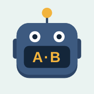

Robot Hláskoun
Návod pro rodiče: instalace a nastavení zabere asi 5 minut.
Otevřete Hláskouna
½ minNačtěte QR kód fotoaparátem telefonu, nebo otevřete odkaz:
bifurk.github.io/Personal_Hlaskoun
Otevřete ho v Chromu nebo v Samsung Internetu.
Otevřete ho v Safari.
Přidejte ho na plochu
1 minPak se spouští z ikony jako běžná aplikace a funguje i bez internetu.
Chrome
- Vpravo nahoře ťukněte na ⋮.
- Zvolte Přidat na plochu nebo Nainstalovat aplikaci (Add to Home screen / Install app).
- Potvrďte Nainstalovat.
Samsung Internet
- Dole vpravo ťukněte na ≡.
- Přidat stránku do → Domovská obrazovka.
Safari
- Dole uprostřed ťukněte na Sdílet ⬆︎ (čtvereček se šipkou).
- V nabídce sjeďte dolů a ťukněte na Přidat na plochu (Add to Home Screen).
- Vpravo nahoře ťukněte na Přidat.
V Chromu na iPhonu je Sdílet ⬆︎ vpravo v adresním řádku (funguje od iOS 16.4).
✓ Na ploše je ikona robota „Hláskoun“.
Nastavte hezký český hlas
2 minHláskoun čte slova a pokyny hlasem telefonu. Nejlépe zní hlas Googlu (Android) nebo „Zuzana – vylepšená“ (iPhone).
- V Obchodě Play vyhledejte Řečové služby od Googlu (Speech Recognition and Synthesis from Google) a ťukněte na Instalovat / Aktualizovat.
- Otevřete Nastavení telefonu, nahoře ťukněte na 🔍 a napište „převod textu“ (text-to-speech).
- Otevřete Převod textu na řeč a ťukněte na text Preferovaný modul (ne na ozubené kolečko) → vyberte Google.
- Teď ťukněte na ⚙️ vedle Preferovaného modulu → Instalovat hlasová data → Čeština.
- Pokud je vedle češtiny koš 🗑️, hlas je už stažený – vyberte Hlas I a hotovo.
Vyzkoušení: v Převodu textu na řeč zvolte Jazyk → Čeština → Přehrát.
- Otevřete Nastavení → Zpřístupnění → Předčítaný obsah → Hlasy.
- Zvolte Čeština → Zuzana → stáhněte Zuzana (vylepšená).
Nastavte Hláskouna
1 min- Spusťte Hláskouna z ikony na ploše.
- Otevřete koutek pro rodiče: podržte ⚙️ vpravo nahoře asi 2 vteřiny (kroužek se zaplní), nebo na ⚙️ 5× rychle ťukněte. Dítě se tam tak náhodou nedostane.
- Ťukněte na ⚙️ Nastavení hlasu a hry.
- Hlas pro celá slova → Vždy hlas telefonu (i pochvaly). Hláskoun hned přečte ukázkové slovo.
- Hlas pro hlásky → Výchozí nahrávky aplikace, nebo si je namluvte (krok 5).
Co znamenají ostatní volby
Tempo hláskování – delší pauza mezi hláskami pro začátečníky.
Hláskovat podle výslovnosti – zapnuto: „věž“ zazní v-j-e-š, „led“ l-e-t (jak se mluví). Vypněte, pokud to dítě plete s písmeny.
Malá písmena – místo velkých tiskacích (podle toho, co se učí ve škole).
Vibrace – telefon jemně zavibruje při správné i špatné odpovědi.
Volitelně: váš hlas
3 minDítě často lépe reaguje na hlas maminky nebo tatínka. V koutku pro rodiče:
- 🎙️ Namluvit hlásky – ťukněte na hlásku a řekněte jen hlásku: „sss“, ne „es“; „mmm“, ne „em“; u p, t, k, b, d jen krátký ráz.
- 🗣️ Namluvit slova – slovo, které nezní dobře, nahrajete sami (jde vrátit původní).
Pak v Nastavení zvolte Moje nahrávky. Mikrofon je potřeba povolit, když se telefon zeptá.
Dítě hraje samo
Robot říká pokyny nahlas, číst nic nemusí. Každé kolo má 5 slov, za slovo bez chyby je zlatá hvězda.
Obtížnost se mění sama. V koutku pro rodiče ťukněte na název hry – uvidíte, která slova dítě umí a ve kterých chybuje.
Když něco nejde
Hláskoun nemluví
Přidejte hlasitost médií. Hláskouna úplně zavřete (v přehledu aplikací ho odsuňte nahoru) a otevřete znovu. Zkontrolujte krok 3.
Na iPhonu vypněte tichý režim (přepínač na boku).
Nejde přidat na plochu
Stránka je nejspíš otevřená v náhledu uvnitř jiné aplikace (WhatsApp, Messenger, Facebook…) – poznáte to tak, že v nabídce chybí „Přidat na plochu“. Otevřete odkaz v ChromuSafari: vpravo dole ikona 🧭 (krok 1).
Nejde otevřít koutek pro rodiče
Na ⚙️ vpravo nahoře 5× rychle ťukněte.
Hláskoun vypadá jinak než předtím / starší verze
Aplikace se aktualizuje sama, když je telefon online. Zavřete ji a otevřete znovu, případně dvakrát.
Chci nahlásit chybu
V koutku pro rodiče ťukněte na 🩺 Diagnostika → 📋 Zkopírovat a text pošlete. Neobsahuje nahrávky ani osobní údaje.
Kde jsou data dítěte?
Jen v tomto telefonu: pokrok, hvězdy, nastavení i vaše nahrávky. Nikam se neposílají a do jiného telefonu se nepřenáší – druhý telefon začíná od nuly.